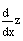
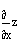
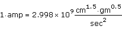
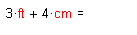

Worksheet Options Dialog Box |
The Worksheet Options dialog allows you to control evaluation on a per document basis. You can:
| Built-in Variables Tab |
Use the Built-in Variables tab for changing built-in variables (such as TOL and CTOL):
Controls the built-in variable ORIGIN that represents the starting index of all arrays in your worksheet. The default is 0.
Controls the built-in variable TOL, that specifies the precision to which integrals and derivatives are evaluated. It also controls the length of the iteration in solve blocks and in the root function. The default is 0.001.
Controls the built-in variable CTOL, that specifies how closely a constraint in a solve block must be met for a solution to be acceptable. CTOL only works with solve blocks closed by Minimize, Maximize, Find, or Minerr. The default is 0.001.
Tells a random number generator function to use a certain sequence of random numbers. To select a different sequence of random numbers, change the value. The default is 1.
Controls the built-in variable PRNPRECISION that represents the number of significant digits to be used when writing to an ASCII data file with the WRITEPRN or APPENDPRN functions. The default is 4.
Controls the built-in variable PRNCOLWIDTH that represents the width of columns in ASCII files created by the WRITEPRN or APPENDPRN functions. The default is 8.
Reverts all values to their default values (shown in the parentheses to the right of each value).
| Calculation Tab |
Use the Calculation tab to control the behavior of particular types of calculations:
When a singular or ill-conditioned matrix is inverted, it may return a result that is not a true inverse, that is, M·M-1 may not be equal to the identity matrix. You should check these results, or the input matrix, to see if it is
If you check this box Mathcad uses a more rigorous but slower matrix inversion algorithm that returns an error in these cases.
Controls the standard used in Boolean comparisons and truncation functions. When checked, two numbers must differ by less than the maximum accuracy of your computer's floating point processor to be considered equal. Numbers between
When not checked, the absolute value of the difference between two numbers divided by their average must be <
Controls the integer associated with the first character in a string. When checked, string functions consider the worksheet value for ORIGIN to be the index of the first character.
Controls the return value of 0/0. When checked, 0/0, or any expression which evaluates to 0/0, will return zero. Otherwise, these expressions return an error.
| Display Tab |
Use the Display tab to control the appearance of various operators such as the multiplication, derivative, and definition operators:
The default is Dot or Thin dot for worksheets created in earlier versions of Mathcad.
AutoSelect |
How the multiplication operator appears depends on its context. For example: |
Dot |
2 · z |
Large dot |
2 · z |
X |
2 x z |
Thin space |
2 z |
No space |
2z |
Thin dot |
z·2 |
The default is Derivative.
Derivative |
 |
Partial derivative |
 |
The default is Small Subscript.
Large Subscript |
vinit |
Small Subscript |
vinit |
The default is Colon equal.
Colon equal |
z := 2 |
Equal |
z = 2 |
The default is Triple equal.
Triple equal |
|
Equal |
z = 2 |
The default is Left arrow.
Left Arrow |
z ← 2 |
Equal |
z = 2 |
The default is Bold equal.
Bold equal |
|
Equal |
z = 2 |
The default is Right arrow.
Right Arrow |
z → z |
Equal |
z = z |
Allows you to select the currency symbol to use in your worksheet from a list of available currencies. The default is the Unicode base currency symbol: ¤.
| Unit System tab |
Mathcad uses the International System of Units (SI) as its default unit system. The system of units you choose determines the default (fundamental) unit displayed for each of the base dimensions. The fundamental units are those used for the fundamental dimensions of length, mass, time, charge or current, temperature, luminosity, and substance (SI unit system). You can always choose to enter a different unit in the unit placeholder, but the base system values are the values that Mathcad returns by default, unless you override them. The options on the Unit System tab are:
meters (m), kilograms (kg), seconds (s), amperes (A), Kelvin (K), candela (cd), moles (mol), money (¤).
Example:
3·ft + 4·cm = 0.954·m
meters (m), kilograms (kg), seconds (sec), coulombs (coul), Kelvin (K), candela (cd), moles (mol), money (¤).
Example:
3·ft + 4·cm = 0.954·m
centimeters (cm), grams (gm), seconds (sec), coulombs (coul), Kelvin (K), candela (cd), moles (mol). Switching to CGS has important implications for the breakdown of electric and magnetic units into fundamental quantities, and its predefined unit set includes statcoulombs, and other "stat" units.
Example:
3·ft + 4·cm = 95.44·cm

feet (ft), pounds (lb), seconds (sec), amperes (A), Kelvin (K), candela (cd), moles (mol), money (¤).
Example:
3·ft + 4·cm = 3.131·ft
Each unit system has associated with it a set of default simplification rules. These rules are applied to results expressed in base units, or when using the derived units to simplify results. The fields in this tab allow you to see the set of base and derived unit simplification rules for each unit system.
Choose the "Custom" unit system to create your own set of base and derived defaults. Begin a custom unit system definition with the base and derived units for any of the built-in unit systems. You must always have seven base quantities, as shown above, although a different unit with the same quantity can be substituted. For example, you can specify inches instead of meters as the default length, while leaving the rest of the starting system intact.
You can have as many or as few additional simplification rules as desired, although one rule may override another. The last rule that applies takes precedence. For example, you can choose to simplify 1/s to Hz by adding Hz to the list of derived units. Any result that has dimensions 1/s automatically simplifies to Hz. You can also remove derived-unit rules, if you never wish to simplify a particular combination of base units.
If you set the unit system to "None," you can define and use your own units in terms of the special built-in constants 1L, 1M, 1T, 1Q, 1K, 1C, 1S, and 1D which represent the dimensions length, mass, time, charge or current, absolute temperature, luminosity, substance, and money, respectively. For example, you can define:
When you select "None," all built-in unit names are disabled.
Example:

| Dimensions tab |
Use the Dimensions tab to specify dimension names used for the units being displayed:
Click to display results using the dimension names shown under Dimension Names rather than the default units.
You can type any dimension names here and they will appear in those results that involve units.
| Compatibility tab |
Use the Compatibility tab to specify the interpretation of various constructs to be consistent with a previous version of Mathcad. See the Tutorial for examples showing how to rewrite these expressions so they return the same results in all versions.
When assigning multiple values simultaneously by packing them into an array, Mathcad 11 performs the assignments sequentially, so the result of assignments at the top of the array affects the results of assignments further down. More recent versions of Mathcad perform the assignments simultaneously, so the value of each assignment does not depend on other values that are changed as part of the same array.
In Mathcad 11, 13, and 14, local assignments return the value of the right-hand-side. In Mathcad 12, the left-hand-side is returned.
Please rewrite worksheets that depend on these switches to a version-neutral construction, as backwards-compatible switches will be maintained only through the Mathcad 14 release.